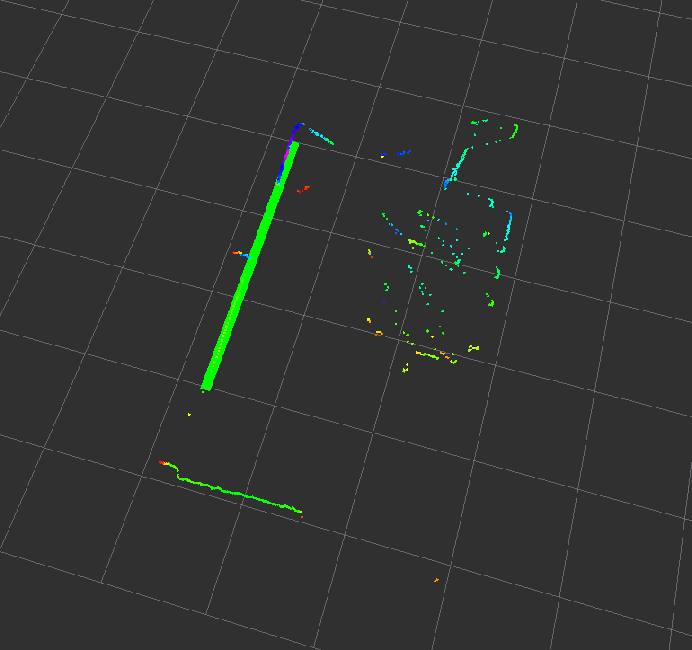
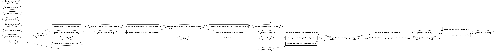
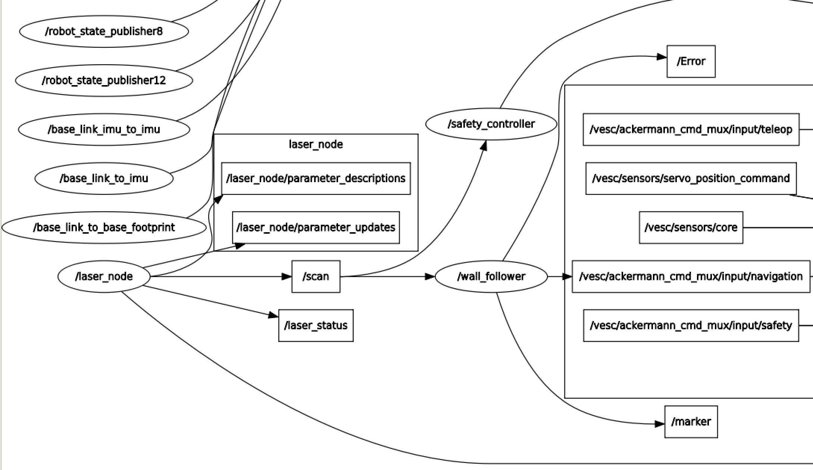

Lab 3
Lab 3: Wall Following and Safety Controller
Table of Contents
- Wall Follower
- Safety Controller
- Website Redesign (Raul)
Wall Following Overview and Motivations
One of the main goals of robotics is to create functional machines that are able to work free from human control. For an indoor mobile robot, having a wall following algorithm robot that is able to handle problems like noise and uncertainty in its environment is an important part of the first step to creating full autonomy. Wall following acts as a stepping stone to build off of for future challenges in autonomy and navigation. As a group, we wanted to create a wall follower that not only performed well in general testing scenarios, but was robust enough to be able to handle many different types of environments. We wanted it to drive smoothly, be consistent, and most importantly, be well conditioned to handle noise and edge cases.
Our Approach
To achieve the goal of high accuracy path following we implemented a three-part controller, controlling for deviations in distance, heading, and path gradient separately. We utilize proportional control for deviations in distance, ure ursuit for deviations in heading, and a spatial derivative for deviations in the wall gradient. Splitting the controller into distinct schemes allows for more accurate fine-tuning and automated gain weighting given environmental conditions. We feed the controller laser scan data that has been partitioned according to the side of the wall we want to follow and then converted to a linear regression to form the desired path. For future work, the desired path can easily be switched out for a new path, allowing us to reuse the large majority of our code.
Data Pre-Processing
The overall purpose of data pre-processing is to convert the laser scan data from the robot's surroundings into information that is compatible with the robot controller. To do this, we first split the data into relevant sections, depending on whether the robot will be following the wall on its right or left side. If it's a left wall, the relevant data is between $\theta=\pi/8$ and $\theta=\pi/2$, and if it's a right wall, between $\theta=-\pi/2$ and $\theta=-\pi/8$. We chose not to include the front ranges because with our term in our controller, the racecar overcompensated when approaching a turn. After splitting the data, we convert it from polar coordinates (r, $\theta$) to cartesian coordinates (x, y) using the relationships: $x = rcos(\theta)$ and $y = rsin(\theta)$. Then, a linear regression is done on the cartesian data points to fit a line, returning a slope and y-intercept. This line is then offset with our desired distance, and this new line is the general path the racecar should be following. The slope and y-intercept are then passed into the controller.
We were able to visualize the line created from the linear regression using the message type Marker, which can show points, shapes, or an image in RVIZ. A line was created for this using the lowest and highest x points to create it.
3-Component Controller
Our controller is composed of three independent components that allow our robot to effectively follow walls and traverse corners. The first term is a proportional controller. Proportional control multiplies some gain, Kp, with the error in distance from the desired path.
$$distance = min(\sqrt{\vec{x}^2+(m\vec{x}+b)^2})$$ $$err=(distance-desired\ distance)$$ $$\theta_1=K_p*err$$
Doing so attempts to drive this deviation to zero. Thus, increasing Kp allows for smaller and smaller errors to be controlled. On ita rtionalis able to effectively minimize the robot’s deviation from the desired path, but it does so with slight oscillations in heading due to overshoot, both in corners and straightaway driving. To mitigate this problem we implemented a Pure Pursuit controller utilizing Ackermann Steering. Ackermann Steering is a method of geometric analysis that is able to determine the necessary angle $\alpha$ the front wheels must turn in order to center the back axle (the distance between the two axles is given by $L$) on a given point by following a circular arc from the starting point to the desired endpoint.
$$\alpha = \arctan(m)$$
Pure pursuit control is a control scheme that accomplishes the task of path following by projecting a desired waypoint at some lookahead distance ($\ l=.5*velocity\ )$ in front of the car and then uses Ackermann Steering to converge on that waypoint.
$$\theta_2 = side*\arctan(\frac{2L\sin(\alpha)}{l})$$
Therefore, pure pursuit controls for the steering angle with respect to the desired path generated during data pre-processing. The effect of this control scheme is a very smooth path albeit one that is distance invariant. This means that the controller is not able to differentiate between parallel paths - it only controls for the robot’s heading with respect to the slope of the wall. While it is possible to design Pure Pursuit controllers to take this distance into account, we found that summing the control inputs from the proportional controller and the Pure Pursuit controller allowed for both error deviations and heading deviations to be minimized simultaneously. This allowed for near-zero error in straightaway driving and significantly reduced the convergence error after coming out of a turn. Content with our straightaway performance, we then turned our attention to our corner turning performance.
Without corner prediction, we found that our car tended to overshoot desired trajectories when going around corners. To allow our car to respond more quickly to oncoming corners, we defined a spatial derivative $dL/dx|_{\pi/2}^{\pi/8}$, which is the change in measured distance to the wall from perpendicular to the racecar's forward-pointing vector to $\pi/8$ before the forward-pointing vector. When $dL/dx > 0$, we know that the more forward part of the scan is reading a larger distance than the perpendicular segment, so we are coming up on a convex corner. When $dL/dx < 0$, we are coming up to a concave corner.


Because we are already calculating a line of best fit to estimate the wall distance, this derivative is just the slope of that line. We define a gain on this derivative in computing our controller in order to more quickly respond to oncoming corners.
$$\theta_3 = K_{wall} * side * m$$
Experimental Evaluation and Testing
Our three primary methods of evaluating our controller were the autograder, observing the simulation, and running experiments with the car. During the design process, we relied mostly on the autograder and simulation, and when we were satisfied with the results from these two methods, we tested the controller on the car.
In analyzing our simulation and autograder results, we found that the autograder did not necessarily give high scores for controllers that would work well in real life. For example, one of the implementations that did decently well in the autograder (>5.7/6.0) had a very high proportional gain, which caused the wheels to flip back and forth between large angles very rapidly. Because angle changes happen instantaneously in simulation, this behavior allowed the car to drive in a straight line in simulation but this controller displayed oscillations when implemented on the racecar. To select and refine the wall-follower controller that we ultimately deployed on the racecar, we aimed to balance a high score on the autograder with behavior that looked like it would transfer to the physical system well, such as smooth turns and small, infrequent changes in steering angle.
Once we implemented the algorithm on the racecar, we adjusted parameters to make our controller more robust to factors that were not present in the simulation, such as other objects in its field of vision. We had to adjust the range of laser scan data we were using to calculate our distance estimation. At first, we were taking the arc sweeping from from straight ahead to past centerline. This allowed us to predict and adjust for oncoming corners better in simulation, but we found that when deployed on the racecar, the extra scan data from past centerline would consider readings from objects on the opposite side of the racecar from the wall in our distance estimation. With the corner prediction from the spatial derivative, we decided to change the range to $\pi/2$ from straight ahead to $\pi/8$ before centerline.

Resulting Error Graph
Potential Improvements and Future Work
The cases that were hardest for us in simulation also proved to be the most difficult cases in the physical experiments. The spatial derivative term in the controller allows the car to predict oncoming corners and start adjusting for them early. While this leads to very accurate turning behavior for concave corners, we found that our controller made the car go around convex corners very tightly, leaving little to room for error when the car was following the wall at a desired distance of 0.5 meters. In particular, following convex corners in narrow hallways resulted in a collision with the wall because the spatial derivative caused our controller to react to the corner too soon.
To address the corner case, we want to define state-dependent gains for maneuvering around corners. The spatial derivative term is positive for convex corners and negative for concave corners. Using the knowledge of the type of corner that we are approaching, we can set different gains for the two cases, allowing us to preserve our current behavior for concave corners and correct the behavior around convex corners.
In addition, we want to implement velocity-dependent gains. Both in simulation and in experiments, our velocities have been quite low, which is not guaranteed to scale well to the higher velocities required for the midterm challenge. The controller will be more robust if the gains are dynamically adjusted.
Safety Controller Overview and Motivations
Having a safety controller for the car is extremely important for both in testing and in overall design. The safety controller prevents the car from crashing into any obstacles it might come into contact with, which becomes crucial when driving at high speeds. However, a safety controller that is too cautious can also create problems for the wall following algorithm: the car should still be able to drive reasonably close to the wall without triggering it. Our main focus for the safety controller was finding and implementing a method that would stop if it sensed that a collision was going to happen, but would still allow the car to drive closely along the wall.
Our Approach
The safety controller’s general method for recognizing imminent collision first involves continually calculating distance changes for each point in the laser scan at a constant timescale. Then look ahead at the current environment scan and check if another iteration of such change would decrease distances to or near a point of contact with the racecar. Because the racecar is not a point object, the threshold for this point of contact should be non-zero and compensate for the racecar's geometry. As an approximation, the portion of the scan considered for this overall process is broken into three general parts -- center, left side, and right side -- and compensate each part relative to its maximum distance to the lidar. While considering a wide angle of data points is necessary for avoiding angled collisions, this field of view opens the possibility of false alarms from doorways and corners. Therefore, while a broad field of distance changes are measured, our controller only stops the racecar when an obstacle is in the direction of motion.
Specific Considerations
For impact avoidance, our system only utilized the portion of the laser scan which encompassed the angle made from the lidar to each of the two wheels (for our racecar this was about $2\pi/3$ radians). We further break down this portion of the scan into two $\pi/6$ radian sections on either side and a front $\pi/3$ radian section in order to separately define the distance between the lidar and furthest point in each section. eall, the distance from scanner to front bumper is about .1m and distances from the scan to each wheel for the side sections is about .15m. For all points within our $\pi/3$ radian slice, we take the difference in distance measured between 5 laser scans. The laserscan publishing at 50hz gives us an updated distance change every tenth of a second. This rate is both fast enough to compensate for reasonable accelerations and unexpected objects entering the field of vision and is slow enough to prevent error in scan data from interfering with the system’s interpretation of the environment. We compare each measured change to the current distance, checking:
$$(d_1 - d_2)b +p > d_2$$
where $d_1$ is the previous distance measured, $d_2$ is the current distance, $p$ is the off-set to compensate for the racecar's geometry, and $b$ is a constant buffer term. Specifically, the buffer represents the number of timsteps predicted by our model until impact with a particular point (we use buffer = 3, meaning we require a projected collision to occur in .3 seconds given the .1 second update time). Before the safety controller is triggered, the racecar makes two last checks. First, we make sure the distance to an object is < .5m away. This check protects against situations where a new object enters the field of vision, causing the measured distance to decrease dramatically in short timescales and cause a false alarm. While more work can be done to interpret environments and prevent this problem more directly (see our future work section) this check ensures any objects of concern are close enough to be a threat while also giving enough distance to ensure a safe stops at a wide range of velocities. Second, we check if the point to which the safety controller reacts is directly in front of the racecar. Since we take a relatively wide angle to detect distance changes, corners and doorways can create false alarms despite the racecar's trajectory passing them by. However, by taking into account distance changes in the full range but only stopping if the ps final position is on the axis between our wheels, we can prevent such false alarms while rema robust to angled collisions.
Experimental Evaluation and Testing
Testing this system involved utilizing both the simulated and real-world racecars. The simulation involved most contrived tests we ran. These involved driving the racecar into a wall at various anspeeds. hile these kinds of tests also occurred on the real racecar to test robustness directly, the real world speed constraints generally allowed us to test wider metrics in simulation. Instead, most assessment of performance on the real robot simply involved running the safety controller in the background during wall following tests. Both the mistakes made by the wall following controller during the tuning process and the close calls required by its general functionality acted as the final tests and tweaks to our safety controller system. Both in simulation and real world settings, the safety controller is very adept at stopping collisions with walls at all angles and velocities. In the real world, we tested at final stopping distance to walls at 2 m/s for various angles:
| Angle (degrees) | 90 | 45 | 10 |
|---|---|---|---|
| Distance to Wall (m) | .34 | .386 | .377 |
In simulation, varying both angle and velocity produced:
| 90 (deg) | 45 (deg) | 10 (deg) | |
|---|---|---|---|
| .5 m/s | .437 m | .447 m | .441 m |
| 2 m/s | .489 m | .476 m | .455 m |
| 5 m/s | .398 m | .479 m | .476 m |
| 10 m/s | .395 m | .431 m | .400 m |
Both in and out of simulation, these data show the safety controller stops impact with the racecar at safe, predictable, and not overly cautious distances across metrics. We should also recognize the noticeable discrepancy between stopping distances for the simulated and real race cars which is likely be a result of slower stopping times given the physics of a physical system. However, since the physical racecar's stopping distances remained safe by a margin of $\approx$ .2m this discrepancy does not impact our perceived safety of the system. Finally, while the system also proved robust against false alarms for driving parallel to walls in testing, convex corners and doorways can still occasionally cause false alarms. Modifications possible for the future may mitigate these errors.
Potential Improvements and Future Work
The safety controller also interacts with the world as a set of points from the laser scan. One improvement we could make on this is using a linear regression to create a more robust world view for the car instead of only seeing points. Having a linear regression on the points would allow the safety controller to function more reliably and be more resistant to potential noise from the sensor or surroundings.
Our safety controller is designed to stop if it sees an unsafe situation, but the next step is for the controller to respond by correcting. The controller will be more effective if it is able to navigate out of a non-safe situation, then switch back to autonomous control/wall following once the car determines it no longer needs the safety controller.
Website Redesign
Websites are an essential tool for communicating in the modern world. However, when presenting and documenting projects online, care must be taken to ensure that the information on a site is easy to consume and that the design of the website is visually appealing. A creative and well-designed website would allow us to more clearly demonstrate our work and separate us from the crowd, and with these goals we set about redesigning the template website provided for us.

The original template website was limited, and while straightforward, lacked much visual stimulation. Large sections of the website were made up of unused grey space, and the small text was difficult to read. We sought to alleviate these issues with our redesign.
Our new site features significant improvements, such as image headers and footers showcasing MIT and the Boston Skyline, content that stretches across the viewing window, and a streamlined navigation bar that is fixed to the top of the screen. These changes were implemented by significantly changing the structure of the HTML that underlies the website, adding multiple new divisions and elements throughout the page, and styling each new element within the CSS style sheet. These changes were applied to each page within the site. The site is responsive and resizes with the size of the browser window, stretching or squeezing content as necessary. Additionally, JavaScript functionality has been added to the site, allowing us to host more dynamic content. Although the current version of the site does not feature much JavaScript, the possibility remains open for more significant scripted components.
With the redesign of our team website, we are now more prepared to professionally present ourselves and our work. We look forward to making use of our site throughout the semester.
Reference Material
An image of our full rosgraph.
An image of our RQT nodes.
